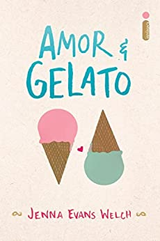
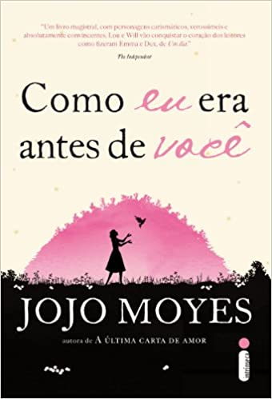
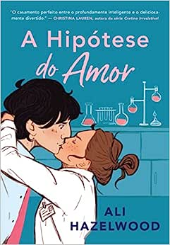

Leah MacKenzie, de 17 anos, não tem coração. O que a mantém viva é um coração artificial que ela carrega dentro de uma mochila.
Com seu tipo sanguíneo raro, um transplante é como um sonho distante. Conformada, ela tenta se esquecer de que está com os dias contados, criando uma lista de “coisas para fazer antes de morrer”.
De repente, Leah recebe uma segunda chance: há um coração disponível! O problema é quando ela descobre que o doador é um garoto da sua escola – e que supostamente se matou!
Matt, o irmão gêmeo do doador, se recusa a acreditar que Eric se suicidou. Quando Leah o procura, eles descobrem que ambos têm sonhos semelhantes que podem ter pistas do que realmente aconteceu a Eric.
Enquanto tentam desvendar esse mistério, Matt e Leah se apaixonam e não querem correr o risco de perder um ao outro. Mas nem a vida nem um coração transplantado vem com garantias.
Quem diria que viver exige mais coragem do que morrer?

Amor & Gelato
Depois da morte da mãe, Lina fica com a missão de realizar um último pedido: ir até a Itália para conhecer o pai. Do dia para a noite, ela se vê na famosa paisagem da Toscana, morando em uma casa localizada no mesmo terreno de um cemitério memorial de soldados americanos da Segunda Guerra Mundial,com um homem que nunca tinha ouvido falar. Apesar das belezas arquitetônicas, da história da cidade e das comidas maravilhosas, o que Lina mais quer é ir embora correndo dali.
Mas as coisas começam a mudar quando ela recebe um antigo diário da mãe. Nele, a menina embarca em uma misteriosa história de amor, que pode explicar suas próprias origens. No meio desse turbilhão de emoções, Lina ainda conhece Ren e Thomas, dois meninos lindos que vão mexer ainda mais com seu coração.

Como Eu Era Antes de Você
Aos 26 anos, Louisa Clark não tem muitas ambições. Ela mora com os pais, a irmã mãe solteira, o sobrinho pequeno e um avô que precisa de cuidados constantes desde que sofreu um derrame. Trabalha como garçonete num café, um emprego que não paga muito, mas ajuda nas despesas, e namora Patrick, um triatleta que não parece interessado nela. Não que ela se importe.
Quando o café fecha as portas, Lou é obrigada a procurar outro emprego. Sem muitas qualificações, consegue trabalho como cuidadora de um tetraplégico. Will Traynor, de 35 anos, é inteligente, rico e mal-humorado. Preso a uma cadeira de rodas depois de um acidente de moto, o antes ativo e esportivo Will desconta toda a sua amargura em quem estiver por perto. Tudo parece pequeno e sem graça para ele, que sabe exatamente como dar um fim a esse sentimento. O que Will não sabe é que Lou está prestes a trazer cor a sua vida. E nenhum dos dois desconfia de que irá mudar para sempre a história um do outro.

A Hipótese do Amor
Olive Smith, aluna do doutorado em Biologia da Universidade Stanford, acredita na ciência – não em algo incontrolável como o amor.
Depois de sair algumas vezes com Jeremy, ela percebe que sua melhor amiga gosta dele e decide juntá-los. Para mostrar que está feliz com essa escolha, Olive precisa ser convincente: afinal, cientistas exigem provas.
Sem muitas opções, ela resolve inventar um namoro de mentira e, num momento de pânico, beija o primeiro homem que vê pela frente.
O problema é que esse homem é Adam Carlsen, um jovem professor de prestígio – conhecido por levar os alunos às lágrimas. Por isso, Olive fica chocada quando o tirano dos laboratórios concorda em levar adiante a farsa e fingir ser seu namorado.
De repente, seu pequeno experimento parece perigosamente próximo da combustão e aquela pequena possibilidade científica, que era apenas uma hipótese sobre o amor, transforma-se em algo totalmente inesperado.